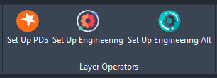

Ober Civils Toolkit User Manual
Welcome to the manual for Ober Civils Toolkit, a cutting-edge 2D ground modeling, drainage design, and CAD automation pack, fully integrated into AutoCAD.
Ober Civils Toolkit is the product of engineers' desire for an improved method of creating, reviewing, and updating their design information. It is engineered specifically for an intuitive and rapid workflow, making it ideal for scenarios with tight deadlines.
Key features
- Ober Civils Toolkit is a comprehensive 2D ground modeling package. It offers a wide range of tools that facilitate seamless work with engineering levels. This includes, but is not limited to, reviewing and calculating distance, level difference, and gradient; rapidly creating new level information based on either level difference or gradient; intuitively generating spot levels around proposed plots; and batch raising or lowering spot levels. Moreover, it simplifies and automates the creation of lateral drains in 2D.
- The Toolkit's speed and reliability are largely due to its 2D base. This setup ensures that computing power isn't wasted on the recalculation and re-triangulation of 3D information. However, the Toolkit does provide the option to convert the generated 2D levels into 3D, which can then be exported and processed in any other software package.
- Ober Civils Toolkit includes many features designed to simplify and automate common, often repetitive tasks. Examples include setting out, working with output drawings from PDS, managing layers, and more.
Configuration
The Toolkit is composed of two primary components: the Ribbon user interface (Ober Civils Toolkit.cuix) and the back-end program (Ober Civils Toolkit.fas):
- To load the Ribbon TAB onto your AutoCAD, type `CUILOAD` into the command bar. Navigate to the `\Ober Civils Toolkit` folder and select `LOAD Ober Civils Toolkit.cuix`. This step is required only once, after which the ribbon tab will automatically open every time AutoCAD launches.
- To load the FAS executable file, type `APPLOAD` into the command bar. Navigate to the `\Ober Civils Toolkit` folder and load `Ober Civils Toolkit.fas`. Then, while still in the Load/Unload application window, navigate to `CONTENTS` within the Startup Suite tab (located in the bottom right corner), and add `Ober Civils Toolkit.fas`. This ensures the Toolkit loads every time AutoCAD is opened.
NOTE: Civils Toolkit is not supported by AutoCAD LT
Levels
Gradient/Fall Calculator
This tool measures the distance between two points and prompts the user for either a fall or a gradient. It then calculates the gradient and fall between the two points.
Spot Level Calculator
The Spot Level Calculator measures the distance between two spot level blocks, then calculates the level difference and gradient between these points. Optionally, it can also add a gradient/arrow label in-between.
Spot Level/FFL Creator
With this tool, the user selects the base Spot Level or FFL block, then the program prompts for a new block location, level difference, or gradient. It subsequently creates a new spot level/FFL block in the selected location.
Spot Levels Around FFL
This feature generates Spot Levels around the FFL. By default, spot levels around FFL are 150 mm below the FFL unless the Underbuild option has been selected, in which case the spot level is reduced by 150 mm + Underbuild Height (for example, if UB height = 300 mm, the new spot level is reduced by 450 mm).
Raise/Lower Levels
This tool adjusts both FFL and Spot Levels by an entered value. It also allows batch adjusting levels of a number of blocks (both FFL and spot levels at the same time). This tool can be used to adjust the decimal places of multiple blocks at once.
Move Block To Elevation
This feature converts 2D spot levels to 3D by moving the blocks to an elevation based on the block attribute value. The 3D information can then be easily processed further by PDS or C3D, utilised for surface creation, etc.
Text To Block
This tool allows for the insertion of blocks at the insertion points of Text entities.
NOTE: Only works with “Text” and not “MTEXT”. “MTEXT” can be exploded in order to convert to “TEXT”
Lateral Drains
- SW PIPE DIA and FW PIPE DIA – Sets pipe diameter of Lateral pipe
- The 'SW LATERALS' and 'FW LATERALS' tools prompt for the upstream chamber Invert Level label (only "TEXT" entities are accepted), followed by the centres of the upstream and downstream chambers, and finally the downstream Invert Level Label.
Layer Operators
- Set Up PDS – Sets PDS Layers within the Drawing to correct colours and converts “CLAY” material text to “uPVC”
- Set Up Engineering – Batch changes colours within Xrefs (only works when xref naming convention is followed: x-layout, x-survey, etc.)
Miscellaneous
Setting out
Sets outs coordinates of each vertex of selected polylines and lines. Sets out either as MLeaders or Blocks (prompts user to select the setting out block – see Blocks.dwg). Block Setting Out option works only with blocks, which have only one attribute.
3D Setting out:
Circles to Blocks
Prompts user to select the base block and then circles. Inserts blocks in the centre points of the selected blocks. Works only with non-dynamic blocks (the ones with no attributes).
2D-Distance
Lets measure 2D distance even when Snap is On and objects are on different elevations.
Select Previous
Selects previously used objects.
Title Block Attribute Transfer
Enables attribute transfer across attributed blocks. Especially useful when applied to Title Blocks of different Sheet Sizes (say A1 to A2 etc.)
OS Grid Reference Finder
Prompts for a point. Grid Reference Finder website pops-up
Contact
Feel free to contact Mr Pat